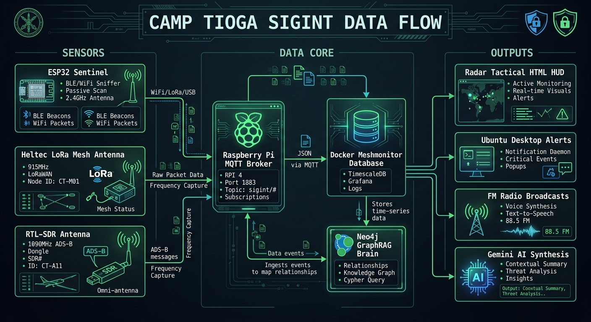

The foundation of the architecture relies on distributed edge nodes. ESP32 headless payloads passively ingest and filter multi-spectrum telemetry (802.11, BLE), 915 MHz LoRa mesh nodes log spatial mesoclimates, and RTL-SDR dongles track 1090 MHz ADS-B transponders. Directly integrates Starlink phased array gRPC telemetry to stream real-time dish orientation, sky obstruction grids, ground station POP pings, and per-device Wi-Fi RSSI signal quality.
Telemetry routing is completely sovereign and operates independently of public cloud dependencies. Dual Raspberry Pi edge nodes run a high-throughput Mosquitto MQTT broker, ingesting sensor payloads into local SQLite time-series databases (tioga_telemetry.db). Autonomous Python sentries and logrotators execute continuous 8-subsystem health diagnostics and self-healing token rotations.
Eliminates high-overhead LLM polling for real-time operations in favor of native compiled binaries (omnet-sentinel). Statically compiled in Rust for ARMv7, this background engine runs in sub-milliseconds: executing automated Open Port Warden scans, astronomical solar ephemeris, 72-hour predictive freeze models, GDD agronomy integration, and live node throughput tracking with zero token burn.
Unified tactical situational awareness across the entire ecosystem. Anchored by a high-speed compiled Go binary (omnet) delivering structured ASCII HUDs, raw JSON, and downloadable CSV exports. Complemented by a dark-neon Web Command Center on port 8080 featuring interactive SVG time-series graphs, per-node throughput popup modals, and P2P WireGuard mesh routing linking homestead, outposts, and fleet.